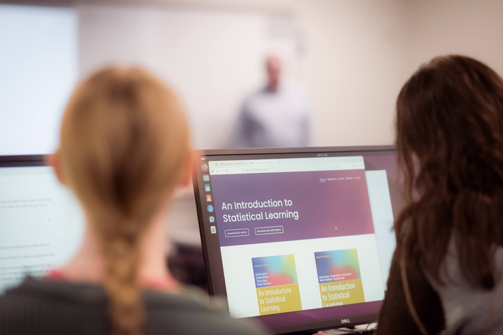

BA in Statistics
Combine statistical thinking with a flexible academic path and complementary interests.
Explore requirements →
Build the skills to measure uncertainty, discover patterns, and turn evidence into sound decisions. At Truman, statistics connects mathematical reasoning to real questions in science, business, health, and society.
Select courses with an eye toward the work you want to do—whether that means entering a quantitative career, pairing statistics with another major, or preparing for graduate study.
Combine statistical thinking with a flexible academic path and complementary interests.
Explore requirements →Deepen theoretical and applied preparation for analytical work and advanced study.
Explore requirements →Connect statistical modeling with modern data analysis and computational techniques.
Explore requirements →
Connect coursework to projects, competitions, and consulting experiences. The goal is not just to run an analysis, but to explain what the results can and cannot tell us.
Statistics offers a versatile toolkit for studying evidence and communicating uncertainty. Truman students can tailor their coursework toward work or further study.
Analyze risk, evaluate trends, and support decisions using quantitative evidence.
Support medical, social, and scientific research with thoughtful study design and statistical analysis.
Prepare for advanced study in statistics, biostatistics, data science, and related fields.

“Statistics is an interesting field of study. It reveals what structure is behind the scenes through analysis and modeling of data.”
Jeonghwa Lee
Computer and Data Sciences Department
Explore the Statistics major and see how quantitative thinking can shape your future.